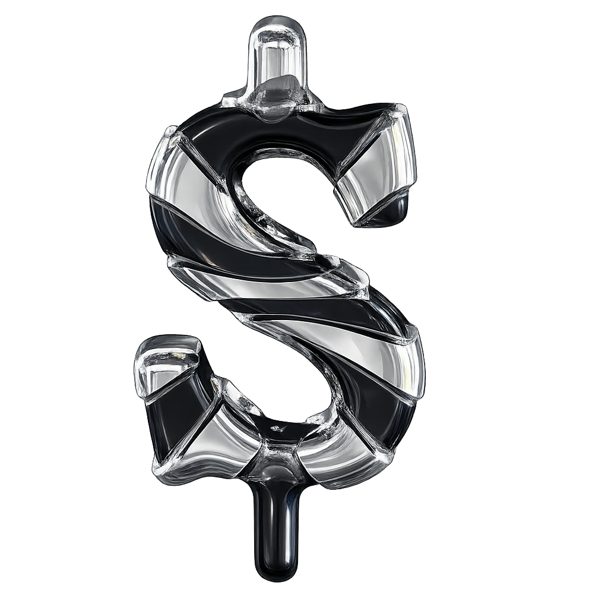
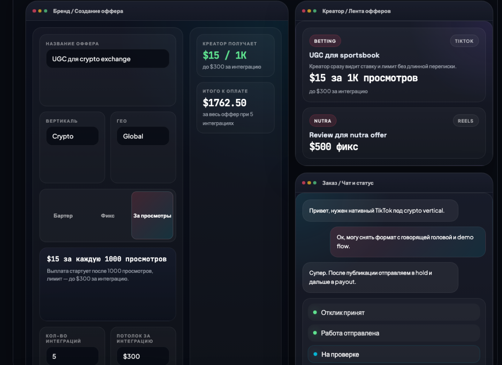

Рынок живет в ручном режиме с уровнем доверия "на словах".
- креаторов ищут по чатикам, рекомендациям и биржам
- условия и сроки дообъясняют уже в личке
- статус размещения и деньги потом сверяют по кускам
ADROP / фабрика UGC-креативов
Сегодня рынок живет по чатикам и договоренностям на словах. ADROP собирает оффер, диалог, публикацию и выплату в одну систему.
ADROP - платформа запуска UGC-креативов для betting, gambling, nutra, dating и crypto.

1 / Что именно делает ADROP
Быстро найти человека, быстро запустить тест и не потерять сделку после публикации.
2 / Почему это интересно Partnerkin
У Partnerkin уже есть рекламодатели, affiliate-команды и трафик доверия. Значит, первые сделки можно собирать внутри своей экосистемы.
Это не синергия на бумаге, а короткий путь к первому спросу.
Медиа и комьюнити уже дают вход к брендам и креаторам.
Комиссия, подписка бренда и платный запуск добавляются поверх медиа-дохода.
Новый сервис. Отдельная экономика. Понятный фокус для команды.
3 / Что это за продукт
Бренд запускает задачу, креатор сразу видит условия, а продукт ведет обе стороны до выплаты.
одна цепочка: оффер, отклик, чат, сдача, проверка, выплата
4 / Что сейчас болит у бренда
Подходящих людей ищут по чатикам, биржам и рекомендациям.
ТЗ в одном месте, ссылка в другом, а статусы живут в голове менеджера.
Не всегда понятно, сколько бренд заплатит и когда безопасно отпускать выплату.
Нужно заранее понять, настоящий ли профиль и дойдет ли человек до публикации.
5 / Что сейчас болит у креатора
Если оффер приходится расшифровывать в личке, скорости и доверия не будет.
Фикс, CPM и лимиты по просмотрам часто объясняют уже по ходу диалога.
После публикации креатор часто не понимает ни срок, ни статус выплаты.
Одни и те же вопросы приходится задавать заново, потому что оффер и задача живут в разных местах.
6 / Как это работает
Выбирает вертикаль, формат оплаты и бюджет. Минимум кампании - $100.
Сразу видит условия, сумму и формат оплаты без переходов в другие мессенджеры.
Ролик сдается в платформе, проходит hold, а в CPM-модели потом фиксируется результат.
7 / Что уже есть в продукте
Фикс, бартер или CPM: бренд задает условия и сразу видит экономику заказа.
Чат, задача и сдача ролика живут в одном месте.
От отклика до выплаты все шаги читаются прямо внутри заказа.
Бренд получает время на проверку, а креатор - понятный срок расчета.
8 / Как это выглядит в продукте
Ниже реальные рабочие экраны: оффер для бренда, лента для креатора и заказ с чатом и статусами.

Сразу задает модель оплаты и понимает, сколько заплатит по итогу.
В ленте сразу понятно: это фикс или оплата за просмотры, сколько платят за 1K и где лимит.
После отклика обе стороны ведут заказ внутри платформы: чат, сдача, проверка и выплата.
9 / Как считается оплата
Самый чувствительный сценарий - оплата за просмотры. Мы делаем ее понятной до отклика.
$15 × просмотры / 1000, но не выше $300 за интеграцию
Креатор видит ставку и потолок, а бренд заранее понимает правило расчета.
Бренд дает товар, а креатор делает размещение без денежной выплаты.
Один креатор получает заранее понятную сумму за одну интеграцию.
Креатор видит ставку за 1K просмотров и сразу понимает верхний лимит по выплате.
10 / Что защищает сделку
Бренд заранее понимает, что именно он контролирует. Креатор заранее понимает, когда и по каким правилам дойдут деньги.
Бренд успевает проверить результат, а креатор заранее знает срок, когда деньги выйдут из hold.
контроль результатаКреатор подтверждает профиль, чтобы бренд не работал вслепую.
меньше рискаОтклик, чат, сдача ролика, проверка и статус денег не рассыпаются по разным сервисам.
один кабинет11 / Почему это удобно бренду
Одна точка входа, понятная сумма и прозрачный путь от брифа до выплаты.
Не нужно сначала собирать людей и статусы по разным источникам.
Можно запускать ролики под TikTok, Reels и Shorts без новой сложной схемы каждый раз.
Подтвержденный профиль и hold выплат дают бренду больше контроля.
12 / Почему это удобно креатору
В фикс-модели видно сумму за интеграцию. В CPM-модели - ставку за 1K и лимит сверху.
Оффер не нужно расшифровывать через длинную переписку в личке.
Есть прозрачный статус по заказу и понятный момент, когда выплата выйдет из hold.
13 / Как ADROP зарабатывает
Это отсекает микрозаказы и держит продукт в рабочей экономике.
$100,000 GMV внутри платформы дают около $17,500 сервисной выручки до расходов.
После первых тестов можно добавлять тарифы и платную помощь с запуском.
14 / Почему это может приносить деньги
Ниже простая модель для ADROP как отдельного Partnerkin-проекта: только комиссия 17.5%, без подписок и без платного запуска.
Creator-реклама уже стала большим бюджетным каналом для брендов.
Создатели контента - уже отдельный рабочий рынок, а не ниша.
Affiliate давно подтверждает спрос на performance-инструменты и новые сервисы рядом с ним.
Считаем только комиссию. Это самый консервативный сценарий.
$75K GMV в месяц
$216K GMV в месяц
$750K GMV в месяц
Источники: Partnerkin advertising page, IAB Creator Economy Ad Spend & Strategy Report 2025, IAB Measuring the Digital Economy 2025, PMA Industry Study 2025.
15 / Что хотим проверить на первом этапе
16 / Что нужно сейчас от коллег
Нам важно понять три вещи: считывается ли продукт, где еще тяжело и что тормозит первые сделки.
После этой презентации человек должен уметь объяснить продукт в двух фразах.
Особенно в создании оффера, CPM и финальном пути к выплате.
Фидбек по позиционированию, онбордингу и главному сообщению продукта.